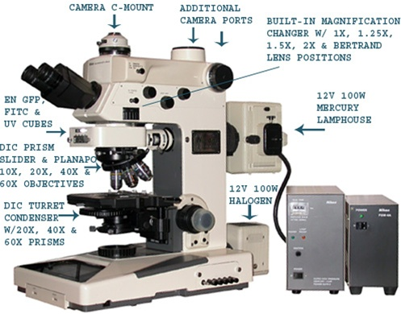
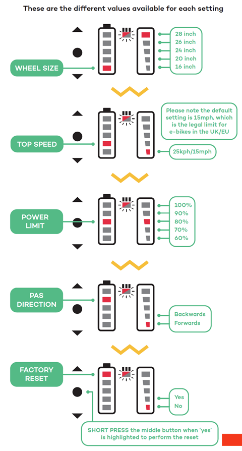
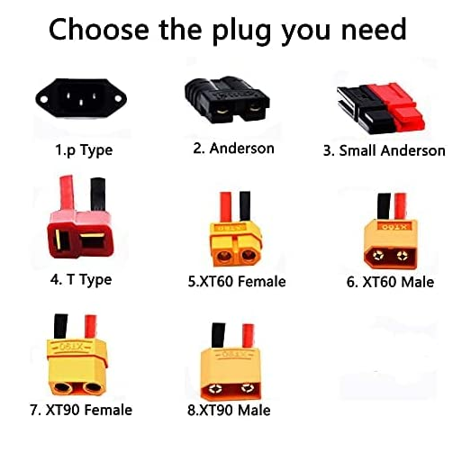

Devices
Induction motor speed control :
Searched characteristics of a potter's wheel ref
Triac vs Variable Frequency Drive for speed control ref
Tune the PID : ref
Snapmaker 2 :
Recyclage de filament :
Protocycler : https://redetec.com/products/protocycler
Servo vs Stepper vs Hybrid motors for CNC control
Bit more detailed servo and stepper infos
Reprap Printers :
Comparatif differents metal 3D printers brands and technologies on the market
Ultimaker :
Hacking NFC chip of spools:
Forum concerns here claims to be able to do so with the Spool-Maker library from DA-Osbborne. It uses the ACR122U SmartCard reader and Mifare Ultralight (aka NTAG216) tags.
Recovered scrap devices :
Sony XCD-SX90 : Firewire IEEE 1394 "s800" data - Hirose 12 pins HR10A-10P-12S for IO's and alim. (wrongly said Hirose EIAJ 12p in datasheet)
Nikon Microphot FXA fluorescence microscope : NIKON MICROPHOT FXA

Electronic testing :
Oscilloscope USB & analyseur logique : HANTEK 6022BL
Open source signal analyser / oscilloscope software ( locic analysers, osciloscopes, multimeters...) : Sigrok
Audio :
Preamps :
Behringer preamp usb for microphone / instrument
Behringer USB tube preamp for microphone / instrument
Accessories :
DIY stuff :
Plotter on tiny OLED screen for integrated projects
Fan powered by peltier module and a candle
Prop Shield by PJRC with led , accelerometer, audio and flash memory capabilities
SpotMicro - Mini Spot robot as from Boston Dynamics but with RC servos
NAS :
PFsense netgate low cost low consumption router : Low cost model
Artisanat :
Pottery kiln buying advices - Studio for pottery making advices - Advices for electric potter's wheel features 0 to 240 RPM
E-Transportation :
Swytch :
Manuel paramétrage du power pack :
(https://swytchbike.zendesk.com/hc/en-gb/articles/360016217474-My-Power-Pack-is-not-working-)
Factory Reset
To Perform a Factory reset on your PRO/ECO power pack please follow the instructions below:
\1) Turn on your Power Pack
\2) Hold down the upwards and downwards arrow to access the settings menu
\3) Keep pressing the centre button until the left battery column is on the top light
\4) Press the upward arrow so the right battery column is on the 2nd light
\5) Press the centre button and hold for 3 seconds
Below are also 2 images to help demonstrate:


Pedal Sensor Check
Another reason to why your motor wheel is not receiving power from the battery is due to the pedal sensor connection.
Please check that the pedal sensor is flashing when the pedals are rotating.
If not please disconnect your pedal sensor from the Handle Bar Bracket and check for any pins out of place in the outlet.
Once reconnected, if the pedal sensor still does not flash and power is not provided to the motor wheel, please contact support@swytchbike.com so our technical team can resolve this issue with further questioning.
Power Pack Check
For this check please make sure that the Power Pack is taken off the bike and turned off. Make sure also that rocker switch at the back of the Power Pack is turned off.
Once this has been do please unzip the Power Pack and check that all wiring is secure and no wires have come loose.
Rocker Switch
Please make sure that the rocker switch has been turned on once the Power Pack has been taken out of the packaging. This is a one time switch, only to be turned off if performing the above check.
Battery type :
NJMFY 10S2P* -> 36V (103.6V and 2 in parallel for sucking more Amps (18650 standard batteries) and about 5-10 Ah)

Plug seems to be T type from what i've seen.
Communication Interface ??? for the battery ? 12C / DQ / SMBus ?
BMS???
CRD : max amps drawn constant - About 20Amps
Fortunately there's a direct relation between CDR (A) and battery capacity (mAh). The higher the capacity, the lower the CDR. That means devices that draw less power can take advantage of higher-capacity cells. Hungrier devices will need to use lower-capacity cells in order to safely draw more current.
At the time of writing (June 2018), the current maximum CDR attainable in an 18650 battery is 38A at 2000mAh. Some bogus manufacturers claim ratings of 40A, or 35A at 3000mAh or greater, but these are not trustworthy ratings. Battery technology evolves constantly, so expect this to change.
(https://www.makeuseof.com/tag/18650-battery/)
Gotway MCM5 :
Battery type : 57.6V (either 16s1p or 16s2p)
LHY16S : board for the gestion of the battery charge-discharge.
Dismantling :
https://www.youtube.com/watch?v=KuzxQKTIXiw